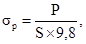
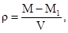

КОМПЛЕКС ПЕРСПЕКТИВНОГО РАЗВИТИЯ
г. МОСКВЫ
УПРАВЛЕНИЕ РАЗВИТИЯ ГЕНПЛАНА
г. МОСКВЫ
МОССТРОЙЛИЦЕНЗИЯ
ВЕДОМСТВЕННЫЕ
СТРОИТЕЛЬНЫЕ НОРМЫ
ИНСТРУКЦИЯ
по применению воднодисперсионных
клеев и мастик в отделочных работах
ВСН 65-97
Москва - 2004
«Инструкция по применению воднодисперсионных клеев и мастик в отделочных работах» разработана НИИМосстроем (д.т.н., проф. Е.Д. Белоусов; инж. А.Н. Шевченко; инж. А.Ю. Сатирский; к.т.н. Я.Г. Могилевский) при участии Мосстройлицензия (Ю.И. Столяров, к.т.н. В.Д. Фельдман) впервые в развитие и дополнение СНиП 3.04.01-87 «Изоляционные и отделочные покрытия» с учетом новых ГОСТ и ТУ на клеящие составы и технологии по их применению.
Инструкция обобщает опыт работ по устройству отделочных покрытий и полов с использованием воднодисперсионных клеев и клеящих мастик, накопленный за последние годы трестами «Мосотделстрой-1», «Мосотделстрой-17», АО «Мосотделспецстрой», АО «Мосотделстрой-5» и другими строительными организациями.
Инструкция согласована с Оперативно-координационным управлением АО «ХК» Главмосстрой».
При пользовании настоящей инструкцией следует учитывать утвержденные изменения, внесенные в стандарты и технические условия на воднодисперсионные клеи и мастики, применяемые в отделочных работах.
|
Комплекс перспективного развития г. Москвы Управление развития Генплана г. Москвы Мосстройлицензия |
Ведомственные строительные нормы |
ВСН 65-97 КПР Разработаны впервые |
|
Инструкция по применению воднодисперсионных клеев и мастик в отделочных работах |
|
Внесены НИИМосстроем |
Утверждены Управлением развития Генплана |
Дата введения в действие |
|
«19» сентября 1997 г |
«1» ноября 1997 г |
1.1. Настоящая инструкция является руководством по применению воднодисперсионных клеев и мастик при устройстве отделочных, защитных покрытий и полов из поливинилхлоридных рулонных и плиточных материалов, керамических плиток, текстильных ковровых изделий, обоев, стеклообоев и других отделочных материалов в отапливаемых помещениях зданий и сооружений.
1.2. Для приклеивания вышеназванных материалов применяются различные виды воднодисперсионных клеев и мастик, которые представляют собой клеящие составы на основе водных дисперсий полиакрилатов поливинилацетата, сополимеров стирола с бутадионом и др.
1.2.1. Клеящие составы могут быть в виде жидкой фазы и порошкообразной.
1.2.3. Склейка происходит в результате затвердевания клеящих составов при испарении растворителя, охлаждения, иногда химических реакций и образования между ними и приклеиваемыми материалами адгезионной связи.
1.3. Устройство отделочных защитных покрытий и полов с применением воднодисперсионных клеев и мастик должно выполняться при положительной температуре окружающей среды и отделываемых поверхностей не ниже +10 °С и влажности воздуха не более 60 %. Такую температуру в помещении необходимо поддерживать круглосуточно, не менее чем за 2 суток до начала и 12 суток после окончания работ.
1.4. Перед устройством отделочных защитных покрытий и полов следует выполнить все предшествующие и специальные работы - такие, как гидроизоляция, прокладка скрытых коммуникаций, предусмотренных проектом, и других работ, при производстве которых могут быть повреждены готовые покрытия строительных конструкций.
1.5. Качество материалов, применяемых для приклеивания отделочных покрытий и полов, необходимо систематически контролировать в соответствии с действующими стандартами или ТУ.
1.6. При выполнении работ по устройству отделочных покрытий и полов с применением воднодисперсионных клеев и мастик необходимо соблюдать требования СНиП 3.04.01-87 «Изоляционные и отделочные покрытия», СНиП III-4-80* «Техника безопасности в строительстве» и настоящей инструкции.
2.1. Воднодисперсионные клеящие составы нетоксичны, взрыво- и пожаробезопасны, т.к. не содержат органических растворителей.
2.2. Выбор типа клея и мастики зависит от вида приклеиваемого материала и основания.
2.3. В таблице 2.1 приведены клеящие материалы, серийно выпускаемые предприятиями России. В таблице 2.2 указаны поступающие на отечественный рынок клеящие материалы, выпускаемые зарубежными фирмами и совместными предприятиями.
Технологические характеристики, физико-механические свойства, а также изготовители и поставщики воднодисперсионных клеев и мастик даны в п. 2.5.
Таблица 2.1
Клеящие материалы, серийно выпускаемые предприятиями России
|
Вид материала (адгезив) |
Типы клеев и мастик |
|||||||||||
|
Бустилат |
АДМ-К |
Лателин |
Клей ПВА |
Синтелакс |
Ревитекс |
Девитекс |
ЦКС цементноклеевой состав |
Сухая цементнопесчаная смесь № 26 АООТ «ОЗСС» |
КМЦ-М |
Дисперсия поливинилацетатная ПВА Д |
||
|
1 |
Линолеум поливинилхлоридный: |
|||||||||||
|
1.1. |
вспененный |
+ |
+ |
+ |
+ |
+ |
||||||
|
1.2. |
на теплозвукоизолирующей подоснове |
+ |
+ |
+ |
+ |
+ |
+ |
+ |
||||
|
1.3. |
на тканевой подоснове |
+ |
+ |
+ |
+ |
+ |
+ |
|||||
|
1.4. |
многослойный и однослойный без подосновы |
+ |
+ |
+ |
+ |
+ |
||||||
|
2 |
Полимерные плитки |
+ |
+ |
+ |
+ |
+ |
||||||
|
3. |
Текстильные покрытия (ковровые) |
+ |
+ |
+ |
+ |
|||||||
|
4. |
Паркетные доски, щитовой паркет |
+ |
+ |
|||||||||
|
5. |
Керамические плитки |
|||||||||||
|
5.1. |
для покрытия полов |
+ |
+ |
+ |
||||||||
|
5.2. |
для облицовки стен |
+ |
+ |
+ |
+ |
+ |
+ |
+ |
+ |
|||
|
6. |
Обои на бумажной основе |
+ |
||||||||||
|
7. |
Обоеподобные материалы на текстильной основе |
+ |
+ |
+ |
||||||||
|
8. |
Стеклообои |
+ |
||||||||||
Таблица 2.2
Клеящие материалы производства совместных предприятий (СП) и зарубежных фирм, поставляемые в Россию
|
Вид материала (адгезив) |
Типы клеев и мастик |
||||||||||
|
Тейппефиксеринг |
Рейдуфикс |
Глимс |
Бетонит Фикс |
Эмфигрез |
Вевлим |
Клистер |
Клистер-Форст-Эйркет |
Флизен Клебер |
|||
|
92 |
96 |
||||||||||
|
1 |
Линолеум поливинилхлоридный: |
+ |
|||||||||
|
1.1. |
вспененный |
+ |
|||||||||
|
1.2. |
на тканевой подоснове |
+ |
|||||||||
|
1.3. |
многослойный и однослойный без подосновы |
+ |
|||||||||
|
2. |
Текстильные покрытия (ковровые) |
+ |
|||||||||
|
3. |
Керамические плитки: |
||||||||||
|
3.1. |
для покрытия полов |
+ |
+ |
+ |
+ |
||||||
|
3.2. |
для облицовки стен |
+ |
+ |
+ |
+ |
+ |
+ |
||||
|
4. |
Обои на бумажной основе |
+ |
+ |
||||||||
|
5. |
Обоеподобные материалы на текстильной основе |
+ |
+ |
||||||||
|
6. |
Стеклообои |
+ |
|||||||||
2.4. Требования к воднодисперсионным клеям и мастикам
2.4.1. Клеи и мастики, применяемые для приклеивания покрытий полов и стен, должны изготовляться централизованно и доставляться на строительные объекты готовыми к употреблению, кроме поставляемых в порошкообразном виде (см. п. 1.2.2).
2.4.2. Клеи и мастики должны быть однородными по составу, без посторонних включений.
2.4.3. Необходимо, чтобы клей или мастика в затвердевшем виде не были хрупкими, обладали водо- и влагостойкостью и стойкостью к действию других жидкостей, с которыми они могут соприкасаться.
2.4.4. Для склеивания материалов наиболее подходящими являются клеи и мастики, отверждающиеся при нормальных температуре и давлении. Поэтому во избежание напряжений клеящая масса должна иметь малую усадку, а также температурное расширение, близкое к температурному расширению склеиваемых материалов.
2.4.5. Клеи и мастики должны легко наноситься на основание зубчатым или плоским шпателем определенной толщины (в зависимости от основания и приклеиваемого материала) и сохранять свои рабочие свойства (не затвердевать) в продолжение 5 ... 20 мин. после нанесения для подгонки приклеиваемых материалов.
2.4.6. Обеспечивать прочность соединения между основанием и приклеиваемым материалом через 24 ч, МПа (кгс/см2), не менее 0,12 ... 0,20 (1,2 - 2), а через 74 часа - 0,24 ... 0,3 (2,4 - 3).
2.5. Воднодисперсионные клеи и мастики, их характеристики и физико-механические свойства
2.5.1. Бустилат (ТУ 400-2-50-93) - клей, представляет собой однородную пастообразную массу. Изготавливается на основе бутадиен-стирольного латекса, водного раствора клея «КМЦ» и наполнителя.
Применяется для приклеивания к основанию линолеума из ПВХ на джутовой, синтетической и тканевой подоснове, ворсовых синтетических ковров, пленки из ПВХ на бумажной и тканевой основе.
Физико-механические свойства:
|
клеящая способность (прочность приклеивания) через 24 ч, МПа (кгс/см2) |
- 0,15 (1,5) |
|
вязкость по Суттарду (диаметр расплыва), мм |
- 70 - 180 |
|
время высыхания (при нормальных условиях), ч |
- 72 |
|
относительная плотность, г/см3 |
- 1,1 - 1,4 |
Изготовитель: Комбинат «Стройдеталь» АО «ХК «Главмосстрой»
2.5.2. АДМ-К (ТУ 400-1-177-79) - клей, представляет собой пастообразную массу. Изготавливается на основе акриловой дисперсии АК-215 и наполнителей.
Применяется для наклейки линолеума из ПВХ, плиток «Первинил», «Винистен», «Полидекор», поливинилхлоридных пленок на бумажной и тканевой основе, керамических плиток при облицовке стен по оштукатуренным поверхностям и влагостойким гипсокартонным листам, а также для склейки торцов паркетных досок и щитов.
Физико-механические свойства:
|
клеящая способность (прочность приклеивания) через 24 ч, МПа (кгс/см2) |
- 0,15 (1,5) |
|
вязкость по Суттарду (диаметр расплыва), мм |
- 150 - 180 |
|
время высыхания (при нормальных условиях), ч |
- 72 |
|
плотность, г/см3 |
- 1,0 - 1,4 |
Изготовитель: Завод строительных красок и мастик АО «СКИМ» г. Москва.
2.5.3. Лателин (ТУ 400-2-324-87) - клей, представляет собой вязкую однородную массу. Изготавливается на основе бутадиенстирольного латекса СКС-65 ГП, мела и добавок.
Применяется для приклеивания линолеума из ПВХ на теплоизолирующей подоснове, вспененного линолеума и декоративного материала для стен.
Физико-механические свойства:
|
клеящая способность (прочность приклеивания) через 24 ч, МПа (кгс/см2) |
- 0,3 (3,0) |
|
вязкость по Суттарду (диаметр расплыва), мм |
- 85 |
|
время высыхания (при нормальных условиях), ч |
- 96 |
|
плотность, г/см3 |
- 1,15 |
Изготовитель: Комбинат «Стройдеталь» АО «ХК «Главмосстрой»
2.5.4. Клей ПВА (ТУ 113-00-00203789-26-96) - приготовляется в растворосмесителе, в который вводят поливинилацетатную дисперсию и наполнитель. Затем смесь тщательно перемешивают в течение 30 минут. Консистенция клея должна соответствовать погружению деревянного пестика на глубину 20 - 25 мм.
Применяется для приклеивания синтетических ворсовых ковров, линолеума на теплоизолирующей подоснове, полимерных плиток, пленочных материалов на бумажной и тканевой подоснове, для склейки торцов паркетных досок и щитов.
Физико-механические свойства:
|
клеящая способность (прочность приклеивания) через 24 ч, МПа (кгс/см2) |
- 0,45 (4,5) |
|
вязкость по Суттарду (диаметр расплыва), мм |
- 110 |
|
время высыхания (при нормальных условиях), ч |
- 72 |
|
плотность, г/см3 |
- 1,3 |
Поставщик: Мосстройснаб и Мосотделпром АО «ХК «Главмосстрой»
Изготовитель: АО «АКРОН» г. Новгород.
2.5.5. Синтелакс (ТУ 21-29-50-89) - мастика, представляет собой пастообразную массу, состоящую из дивинилстирольного латекса (СКС-65-ГП), натриевой соли карбоксиметилцеллюлозы, загустителя, наполнителя и добавок.
Применяется для приклеивания покрытий полов из ПВХ, линолеума, рулонных материалов из ПВХ и на теплоизолирующей подоснове и декоративного поливинилхлоридного материала для стен.
Физико-механические свойства:
|
клеящая способность (прочность приклеивания) через 24 ч, МПа (кгс/см2) |
- 0,3 (3,0) |
|
вязкость по Суттарду (диаметр расплыва), мм |
- 85 |
|
время высыхания (при нормальных условиях), ч |
- 96 |
|
плотность, г/см3 |
- 1,2 |
Изготовитель: Завод «Стройполимер» г. Хлюпино Московской области.
2.5.6. Ревитекс (ТУ 400-2-534-93) - клей, представляет собой суспензию наполнителей в водной дисперсии полимера, модифицированного жидким стеклом, техническими добавками и поверхностно-активными наполнителями.
Применяется для приклеивания рулонных и плиточных поливинилхлоридных материалов к поверхности полов и стен и керамических плиток при облицовке стен.
Физико-механические свойства:
|
клеящая способность (прочность приклеивания) через 24 ч, МПа (кгс/см2) |
- 0,2 (2,0) |
|
вязкость по Суттарду (диаметр расплыва), мм |
- 80 - 120 |
|
плотность, г/см3 |
- 1,5 |
Изготовитель: Завод «Стройполимер» г. Хлюпино Московской области.
2.5.7. Девитекс (ТУ 5770-072-00284718-93) - клей, представляет собой воднодисперсионный материал на основе синтетического латекса, технологических добавок, поверхностно-активных наполнителей.
Применяется для приклеивания ворсовых синтетических ковров, линолеума из ПВХ на джутовой, синтетической и тканевой подоснове, пленки из ПВХ на бумажной основе, керамических плиток при облицовке стен.
Физико-механические свойства:
|
клеящая способность (прочность приклеивания) через 24 ч, МПа (кгс/см2) |
- 0,3 (3,0) |
|
вязкость по Суттарду (диаметр расплыва), мм |
- 80 - 160 |
|
плотность, г/см3 |
- 1,2 - 1,7 |
Изготовитель: Завод «Стройполимер» г. Хлюпино Московской области
2.5.8. Цементно-клеевой состав (ИКС) (ТУ 5772-003-03990339-96) - представляет собой сухую смесь цемента, песка и полимерных добавок, придающих ему тиксотропные свойства и улучшающих адгезию. Перед применением смешивается с водой в соотношении 100/23-25.
Предназначен для приклеивания керамических плиток к бетонным, асбестоцементным и цементно-стружечным подложкам. Рекомендуется также для заделки швов в потолках, между панелями и стыками в местах установки сантехники (ванн, раковин).
Физико-механические свойства:
|
клеящая способность (прочность приклеивания) через 24 ч, МПа (кгс/см2) |
- 0,2 (2,0) |
|
подвижность по стандартному конусу, см |
- 7 - 8 |
|
жизнеспособность, не менее, ч |
- 3 |
|
плотность, г/см3 |
- 1,6 - 1,8 |
Изготовитель: Завод строительных красок и мастик АО «СКИМ»
2.5.9. Цементно-песчаная плиточная смесь № 26 (ТУ 5745-003-05668056-93) - представляет собой сухую смесь из цемента, обогащенного песка и полимерных добавок, придающих смеси улучшенные прочностные свойства, стойкость к усадке и адгезии.
Применяется для приклеивания керамической плитки к стенам по бетонному основанию.
Физико-механические свойства:
|
клеящая способность (прочность приклеивания) через 24 ч, МПа (кгс/см2) |
- 0,32 (3,2) |
|
подвижность по стандартному конусу, см |
- 6 - 7 |
|
плотность, г/см3 |
- 1,9 |
Изготовитель: Опытный завод сухих смесей АО «ХК» Главмосстрой»
2.5.10. КМЦ-М (ОСТ 6-05-386-80) - клей, представляет собой волокнистую массу из карбоксиметилцеллюлозы, перед применением затворяется водой.
Применяется для приклеивания к стенам обоев на бумажной и текстильной основах.
Изготовители: Завод по изготовлению составов из целлюлозы г. Рошаль Тульской области и фирма «Танекс», Латвия, г. Добеле.
2.5.11. Дисперсия поливинилацетатная (ГОСТ 18992-90) - представляет собой продукт полимеризации винилацетата в водной среде в присутствии катализатора и защитного коллоида. Выпускается нескольких марок, пластифицированная и непластифицированная. Токсичность дисперсии зависит от токсичности пластификатора (дибутилфталат - токсичен, дибутилацетат - нетоксичен).
Применяется в качестве связующего для изготовления полимерцементов и полимербетонов, а также для полимер-цементно-песчаных клеящих мастик для облицовки стен керамическими плитками, стекломрамором и для склейки торцов паркетных досок и щитов.
Пластифицированная дисперсия с содержанием пластификатора более 7 % (в перечете на сухой остаток) не является морозоустойчивой и в зимнее время поставляется раздельно: непластифицированная дисперсия и пластификатор.
Физико-механические свойства:
|
клеящая способность (прочность приклеивания) через 24 ч, МПа (кгс/см2) |
- 0,4 - 0,5 |
|
вязкость дисперсии (по стандартной кружке ВМС), с |
- 50 - 60 |
Поставщик: Мосстройснаб и Мосотделпром АО «ХК» Главмосстрой»
2.5.12. Тейппефиксеринг - клей, представляет собой пастообразную массу из воднодисперсионного латекса, полимеров и наполнителей.
Применяется для приклеивания линолеума из ПВХ на вспененной подоснове и ковровых покрытий по основаниям из ДСП и ДВП, деревянному, бетонному и цементно-песчаной стяжке.
Физико-механические свойства:
|
клеящая способность (прочность приклеивания) через 24 ч, МПа (кгс/см2) |
- 0,2 (2,0) |
|
вязкость, в зависимости от степени разведения водой, сПуаз |
- 150 - 250000 |
|
время высыхания (при нормальных условиях), ч |
- 24 |
|
плотность, г/см3 |
- 1,04 |
Поставщик: ЗАО «Норд Мастерс Групп»
Производитель: фирма «Дана Лим» (Дания).
2.5.13. Рейдуфикс - клей, представляет собой пастообразную массу из акрилового клея на водной основе и наполнителей.
Применяется для приклеивания керамической плитки, изделий из пенопласта и пенополистирола, а также других отделочных материалов по основаниям деревянным, бетонным, цементно-песчаным, стяжкам из ДСП и ДВП.
Физико-механические свойства:
|
клеящая способность (прочность приклеивания) через 24 ч, МПа (кгс/см2) |
- 2,15 (21,5) |
|
вязкость по Суттарду (диаметр расплыва), мм |
- 130 |
|
время высыхания (при нормальных условиях), ч |
- 24 |
|
плотность, г/см3 |
- 1,2 |
Поставщик: ЗАО «Норд Мастерс Групп»
Производитель: фирма «Алфикс» (Дания)
2.5.14. Глимс-92 (ТУ 4550-063-40397319-96) представляет собой цементно-песчаную смесь с различными полимерными добавками. Высокопрочный, водостойкий и морозостойкий.
Применяется для приклеивания керамической плитки по основаниям: деревянным, бетонным, цементно-песчаным, стяжкам из ДСП и ДВП.
Физико-механические свойства:
|
клеящая способность (прочность приклеивания) через 24 ч, МПа (кгс/см2) |
- 0,21 (2,1) |
|
время высыхания (при нормальных условиях), ч |
- 24 |
|
плотность, г/см3 |
- 1,87 |
Изготовитель: ЗАО «Глимс-Продакшн».
Инновационное производство строительных материалов.
2.5.15. Глимс-96 (ТУ 4550-063-40397319-96)-специальный плиточный клей, представляет собой цементно-песчаную смесь с различными полимерными добавками, порошкообразный. Клей высокопрочный, водостойкий и морозостойкий.
Применяется при облицовке поверхностей керамической плиткой, в том числе в бассейнах, ванных комнатах и других помещениях с повышенной влажностью воздуха.
Физико-механические свойства:
|
клеящая способность (прочность приклеивания) через 24 ч, МПа (кгс/см2) |
- 0,27 (2,7) |
|
время высыхания (при нормальных условиях), ч |
- 24 |
|
плотность, г/см3 |
- 1,87 |
Изготовитель: ЗАО «Глимс-Продакшн».
Инновационное производство строительных материалов.
2.5.16. Бетонит «Фикс» - мастика в порошкообразном виде на цементной основе, перед употреблением разводится водой.
Применяется при облицовке керамической плиткой стен и полов по бетонным, кирпичным поверхностям и гипсокартонным листам.
Изготовитель: фирма «Оптирок» (Финляндия).
Поставщик в России: представительство фирмы «Оптирок».
2.5.17. Эмфигез - строительный клей порошкообразный на цементной основе и минеральных добавках.
Применяется для приклеивания керамической плитки к стенам по бетонным, кирпичным поверхностям и гипсокартонным листам. Для настилки полов керамической плиткой используется только по цементному основанию.
Поставщик: АОЗТ «Темп Строй Сервис», Москва.
2.5.18. «Вейвлим» - клей, представляет собой пастообразную массу на водной дисперсии, полимеров и наполнителей.
Применяется для приклеивания стеклообоев, стекловолокна и других видов тяжелых обоев.
Физико-механические свойства:
|
клеящая способность (прочность приклеивания) через 24 ч, МПа (кгс/см2) |
- 0,12 (1,2) |
|
вязкость, в зависимости от степени разведения водой, сПуаз |
- 540000 |
|
время высыхания (при нормальных условиях), ч |
- 12 |
|
плотность, г/см3 |
- 1,04 |
Поставщик: ЗАО «Норд Мастерс Групп».
Производитель: фирма «Дана Лим» (Дания).
2.5.19. Клистер - клей порошкообразный, легкорастворимый водой, не образует комков. Содержит добавки, защищающие кожу рук при работе.
Применяется для приклеивания обычных обоев на бумажной основе.
Физико-механические свойства:
|
клеящая способность (прочность приклеивания) через 24 ч, МПа (кгс/см2) |
- 0,1 (1,0) |
|
вязкость, в зависимости от степени разведения водой, сПуаз |
- 150 - 250000 |
|
время высыхания (при нормальных условиях), ч |
- 12 |
|
плотность(разведенного клея), г/см3 |
- 1,04 |
Поставщик: ЗАО «Норд Мастерс Групп»
Производитель: фирма «Дана АиМ» (Дания)
2.5.20. Клистер-Форстейркет - клей порошкообразный, быстрорастворимый. Содержит добавки, повышающие прочность клея.
Применяется для приклеивания тяжелых и виниловых обоев, а также из стекловолокна.
Физико-механические свойства:
|
клеящая способность (прочность приклеивания) через 24 ч, МПа (кгс/см2) |
- 0,12 (1,2) |
|
вязкость, в зависимости от степени разведения водой, сПуаз |
- 200 - 300000 |
|
время высыхания (при нормальных условиях), ч |
- 12 |
|
плотность, г/см3 |
- 1,04 |
Поставщик: ЗАО «Норд Мастер Групп».
Производитель: фирма «Дана Лим» (Дания).
2.5.21. Флизенклебер (ТУ 5745-012-04001508-97) - строительный плиточный клей (СПК), представляет собой сухую смесь на цементной основе со специальными добавками, улучшающими качество клея. Перед употреблением затворяется водой до пастообразного состояния, время начала облицовки не ранее 10 минут после перемешивания с водой.
Предназначается для приклеивания к поверхности строительных конструкций (стены, полы), керамических изделий, плит из натурального камня, легких строительных изделий (облицовочных плит из минеральных волокон, полистирола, полиуретана).
Физико-механические свойства:
|
клеящая способность (прочность приклеивания) через 24 ч, МПа (кгс/см2) |
- 0,5 (5,0) |
|
зернистость (остаток на сите 0,315 мм), не более, % |
- 3 - 10 |
Завод изготовитель: ОАО СП «ТИГИ-Кнауф», г. Красногорск Московской области.
3.1.1. Выбор типа клея или мастики для приклеивания штучных и рулонных материалов осуществляется по табл. 2.1 и 2.2.
3.1.2. Перед началом производства работ необходимо:
проверить пригодность основания для устройства соответствующего покрытия;
устранить имеющиеся неровности выравнивающими составами или выполнить стяжку (для полов), так как тонкая прослойка клеящего состава не может компенсировать все неровности и обеспечить прочность соединения (адгезию) между основанием и приклеиваемым материалом.
Прочность оснований должна быть не менее прочности отделочного покрытия и соответствовать проектной.
3.1.3. Приготовление специальных полимерцементных выравнивающих растворов из готовых сухих смесей и клеящих мастик из порошкообразных компонентов следует выполнять в растворосмесителях типа СО-23В, СО-46 Б, СО-26 В.
Сначала необходимо в растворосмеситель загрузить сухие смеси и перемешать в течение 1 - 2 минут. Затем в сухую смесь добавить расчетное количество воды и перемешать в течение 3 - 5 минут до получения однородной массы требуемой подвижности с последующей выдержкой в течение 10 ... 15 минут до применения.
3.1.4. При устройстве отделочных покрытий и полов широкое применение нашли импортные материалы различных зарубежных фирм: рулонные и штучные ПВХ материалы, керамические плитки и клеящие составы для их крепления, имеющие аналогичные физико-механические свойства с выпускаемыми в России.
При их использовании необходимо руководствоваться указаниями или рекомендациями, прилагаемыми к этим материалам, а при их отсутствии следует проводить лабораторные испытания на соответствие действующим НТД РФ.
3.2.1. Прочность основания должна быть не менее 15 МПа (150 кгс/см2).
3.2.2. Основание должно быть ровным, горизонтальным или соответствовать заданному проектному уклону.
3.2.3. Допустимые отклонения:
просветы между контрольной двухметровой рейкой и проверяемой поверхностью не должны превышать 2 мм;
отклонение плоскости основания от горизонтали или заданного уклона не должно превышать 0,2 % соответствующего размера помещения; при ширине и длине помещения 25 м и более это отклонение не должно превышать 40 - 50 мм.
Перед укладкой плитки незначительные неровности выравниваются полимерцементным составом.
3.2.5. Температурный режим. В процессе производства работ температура основания клеящей прослойки и плитки должна быть не ниже +10 °С; такая температура должна поддерживаться до приобретения прочности клеящей прослойки на отрыв не менее 70 % проектной.
3.2.6. Укладка и разравнивание клеящей прослойки выполняется одинаковой толщины захватками для укладки нескольких рядов плиток.
3.2.8. Клеящие составы готовые пастообразные или приготовленные из порошкообразных компонентов (клеи, мастики) наносят на сухое основание лопаткой, а затем «прочесывают» зубчатым шпателем. Зубчатый шпатель должен иметь глубину зуба 4 ... 6 мм (в зависимости от вида мастики и рельефа тыльной стороны плитки). Таким шпателем создается слой клеящего состава толщиной 2 ... 2,5 мм.
3.2.9. После разравнивания прослойки укладывают на нее плитки*, слегка осаживая легкими ударами ручкой лопатки. Одновременно с осаживанием плиток происходит и выравнивание поверхности покрытия с помощью рейки или отрезка доски длиной 50 ... 70 см.
При устройстве покрытия тонкими плитками (толщ. 8 ... 9 мм) для того, чтобы равномерно и сильно пригнать их к основанию, производится прикатывание плиток после укладки широким мягким валиком.
_____________
* Тыльную сторону плиток при укладке их на прослойку из полимерцементного состава необходимо увлажнять водным раствором ПВА дисперсии (см. п. 3.2.7).
3.2.10. Независимо от способа настилки плиток и вида прослойки необходимо их укладывать с уширенными швами (3 ... 4 мм), заполняемыми полимерцементным раствором (см. п. 3.2.7.) или специальными составами (не ранее 48 ч после укладки). Для устройства швов рекомендуется применять крестообразные пластмассовые фиксаторы.
Наличие уширенных швов между плитками дает возможность учитывать естественные отклонения по форме и размерам, неизбежно имеющие место при обжиге керамических плиток в процессе их производства, что и предусмотрено допусками в ГОСТ 6787-90.
3.2.11. Правильность укладки плиток систематически проверяется во всех направлениях контрольной рейкой.
3.2.12. Законченное покрытие плиточного пола посыпают древесными опилками толщиной 20 ... 30 мм и выдерживают в течение 7 ... 10 суток во влажном состоянии, в зависимости от вида клеящей прослойки, влажности и температуры воздуха в помещении.
3.2.13. Плитки покрытия пола должны иметь прочное сцепление с прослойкой и не отделяться от нее, что проверяется простукиванием. Наличие пустот под плитками, открытых швов между плитками, трещин и выбоин в плитках не допускается.
3.3.1. Работы по облицовке вертикальных поверхностей керамическими плитками следует начинать с подготовки поверхностей, облицовочных плиток и клеящих составов для прослойки.
3.3.2. При облицовке вертикальных поверхностей качество оснований должно удовлетворять следующим требованиям: поверхности стен (перегородок) не должны иметь отклонений от вертикали более 2 мм на 1 м высоты, неровностей в виде выступов и впадин более 1,5 мм, высолов и жировых пятен.
3.3.3. Поверхности стен (перегородок) перед облицовкой плитками необходимо предварительно очистить шпателем или скребками. Очищенные поверхности провешивают с целью определения степени их отклонения от вертикали и горизонтали.
При помощи угольника и отвеса проверяют прямоугольность сопряжения поверхностей.
3.3.4. Степень отклонения поверхностей от горизонтали и вертикали, а также углов от прямоугольности фиксируют путем установки маяков (марок), выравнивая с учетом маяков и толщины клеящей прослойки, срубки наплывов, очистки и т.д.
3.3.5. Впадины на поверхности более 1,5 мм и неровности более 2 мм (от вертикали) устраняются выравнивающими полимерцементными составами, а выступы срезаются скребками.
3.3.6. Поверхности (бетонные, асбестоцементные, оштукатуренные), подготовленные под облицовку, должны иметь влажность не более 8 %, а гипсокартонные не более 1 %.
3.3.7. Малярные пятна удаляют 3 %-ным раствором соляной кислоты или 5 %-ным раствором кальцинированной соды с последующей промывкой очищенных мест чистой водой. Особенно стойкие жировые пятна промывают с одновременной очисткой их металлическими щетками.
3.3.8. При подготовке под облицовку поверхностей должны быть соблюдены требования СНиП 3.04.01-87 (табл. 9) «Изоляционные и отделочные покрытия».
3.3.9. Плитки, доставленные на объект, сортируют по размерам, цвету, оттенкам и качеству лицевой поверхности.
Сортировку по размерам производят при помощи шаблона, а по цвету, тону и рисунку - путем сравнения с принятыми эталонами.
3.3.10. Облицовочные работы должны выполняться при положительной температуре окружающей среды и отделываемых поверхностей не ниже 10 °С. Такую температуру в помещении необходимо поддерживать круглосуточно, не менее чем за 2 суток до начала и 12 суток после окончания работ.
3.3.11. Перед началом облицовки определяют количество плиток в ряду и устанавливают маячные плитки.
3.3.12. Укладку плиток производят с нижнего ряда, опирающегося на рейку, горизонтально закрепленную к стене.
3.3.13. Клей или мастику следует наносить на облицовываемую поверхность плоским шпателем с последующим разравниванием зубчатым шпателем равномерным, без потеков слоем до начала установки плиток. Толщина слоя клеящей прослойки должна составлять в зависимости от вида клеящего состава и плитки - 1,5 ... 3 мм. Высота зуба шпателя 3 ... 6 мм в зависимости от рельефа тыльной стороны плитки и наносимой мастики.
В процессе облицовки швы оставляют незаполненными, а через 48 ч их заполняют полимерцементным раствором или приготовленным составом из фуговочной цветной смеси, выпускаемой АООТ «Опытный завод сухих смесей».
3.3.15. По ходу облицовки систематически проверяют качество приклеивания плиток, они должны плотно прилегать к основанию.
3.3.16. После облицовки поверхности плиток должны быть очищены от наплыва клеящих составов немедленно.
3.3.17. При производстве облицовочных работ следует соблюдать требования СНиП 3.04.01-87, табл. 13.
3.3.18. На облицованной плитками поверхности не допускаются сколы, трещины, пятна, потеки мастики или клея.
3.3.19. Швы должны быть прямолинейными, одинаковой ширины и заполнены составами, указанными в п. 3.3.14.
3.3.20. Рисунок облицовки должен соответствовать проекту.
3.3.21. При выполнении последующих отделочных работ облицовку защищают от механического повреждения и загрязнения. Для этого ее поверхность заклеивают бумагой или покрывают тонким слоем гипсового или мелового теста, удаляемых при окончательной очистке лицевой стороны облицовки.
3.3.22. Облицовочные поверхности в процессе эксплуатации рекомендуется мыть нейтральными моющими средствами с последующей промывкой теплой водой (40 ... 50 °С).
3.4.1. Для покрытий полов широко применяют различные типы линолеума, поливинилхлоридных плиток и рулонных материалов на основе синтетических (ковровые покрытия) волокон, перечень которых приведен в табл. 2.1.
Указанные материалы должны соответствовать требованиям действующих стандартов и технических условий.
3.4.2. Для приклейки названных материалов применяются воднодисперсионные клеи или мастики, перечень которых приведен в табл. 2.1 и 2.2.
3.4.3. Покрытия полов из линолеума, поливинилхлоридных плиток и материалов на основе синтетических волокон (ковровые покрытия) устраивают по основаниям:
сплошным железобетонным панелям перекрытий;
монолитным стяжкам из бетона, цементно-песчаного раствора;
сборным стяжкам из древесноволокнистых (ДВП), древесностружечных (ДСП) и цементностружечных (ЦСП) плит.
3.4.4. Прочность бетона и раствора стяжек должна быть не менее 15 МПа (150 кгс/см2).
3.4.5. Общие требования к основаниям под покрытия полов на клеях и мастиках изложены в п.п. 3.12, 3.13, 3.2.1 - 3.2.4.
3.4.6. Стыки между элементами сборной стяжки перед наклейкой полимерных материалов на воднодисперсионных клеях или мастиках должны быть заклеены полосками плотной бумаги или липкой лентой шириной 40 ... 60 мм.
3.4.7. При устройстве покрытий полов из полимерных материалов влажность панелей перекрытий должна быть не выше 4 %, а стяжек на основе цементного, полимерцементного и гипсового вяжущего - не выше 5 %.
3.4.8. Температура воздуха в помещении должна быть не ниже +15 °С, такая температура должна поддерживаться в течение суток после окончания работ.
3.4.12. Полотнища наклеивают по всей площади, за исключением продольных краев и поперечных стыков.
3.4.13. В местах стыков полотнищ оставляют не промазанные под ними полосы шириной 100 ... 120 мм.
При необходимости производят сварку кромок полотнищ линолеума на месте укладки после приклейки стыков.
3.4.17. При устройстве покрытий полов из линолеума, сваренного в ковры размером на комнату, должны быть выполнены те же технологические операции, что и для приклейки отдельных полотнищ (п.п. 3.4.9, 3.4.10, 3.4.11, 3.4.12, 3.4.14) за исключением операций по обработке стыков полотнищ (п.п. 3.4.12, 3.4.13, 3.4.15, 3.4.16).
3.4.18. При устройстве покрытий полов из поливинилхлоридных плиток выполняют следующие технологические операции:
выдержка плиток в теплом помещении;
очистка основания (нижележащего слоя);
разметка площади помещения и разбивка осей;
пробная укладка плиток насухо;
наклейка плиток на основание (нижележащий слой).
3.4.19. Полы из поливинилхлоридных плиток выполняют по определенному рисунку. Работу начинают с нанесения на основание продольной и поперечной осей помещения; начиная от точки пересечения осей, раскладывают насухо два взаимно перпендикулярных ряда плиток так, чтобы кромки примыкали к разбивочным осям.
3.4.20. Если целое число плиток не укладывается точно по длине и ширине помещения, разбивочные оси смещают так, чтобы плитки нужно было подрезать только у одной или двух взаимно перпендикулярных стен.
3.4.21. Клеящий состав наносят на основание полосой шире ряда плиток на 80 ... 100 мм слоем, толщиной 0,4 - 0,5 мм. Через 15 - 20 мин после нанесения клеящего состава наклеивают плитки способом «на себя», когда рабочие, двигаясь по направлению к выходу, находятся на непокрытом основании.
3.4.22. Приклейку плиток начинают от разбивочной оси и ведут сначала в одном направлении, а потом в другом. При этом их плотно надо прижимать к основанию с помощью ножного катка или простукивают по всей площади деревянным молотком с резиновой накладкой.
3.4.23. Технические требования к качеству покрытий полов из полимерных материалов:
уступы и зазоры между кромками смежных полотнищ линолеума и поливинилхлоридными плитками не допускаются;
линии стыков должны быть строго прямолинейны. Отклонение швов от прямого направления не должно превышать 10 мм на 10 м длины;
на покрытиях не допускаются вздутия, неприклеенные места, приподнятые кромки;
просадка покрытия из линолеума под сосредоточенной нагрузкой 50 кг, передаваемой роликом диаметром 30 и шириной 15 мм в продолжение 24 ч, не должна превышать 1 мм, при этом в материале покрытия пола под роликом не должно появляться трещин;
поверхность покрытий пола из материалов на основе синтетических волокон (ковровые покрытия) должна быть ровной и чистой. Стыки между полотнищами должны быть едва заметными, плотными, без загрязнений и выпусков нитей. Ворс должен иметь одно направление (от окна к двери) по всей площади пола. На поверхности покрытия пола не должно быть дыр, бугров, вздутий, неприклеенных мест и других дефектов.
3.5.1. В помещениях, предназначенных для оклеивания обоями, должны быть закончены все малярные работы, кроме окрашивания полов, установки и окончательного окрашивания наличников и плинтусов.
3.5.2. Влажность стен перед оклейкой обоями не должна превышать 8 % для деревянных и 4 % для стен из других материалов.
3.5.3. Ровные и гладкие поверхности, не имеющие бугров, впадин, раковин, трещин и следов затирочного инструмента, допускается оклеивать бумажными обоями без предварительной оклейки бумагой (макулатурой).
3.5.4. При оклеивании обоями бетонных или оштукатуренных поверхностей необходимо очистить их от набелов и других загрязнений, подмазать гипсополимерными шпаклевками неровности, отшлифовать подмазанные места, а затем огрунтовать поливинилацетантной дисперсией (ПВАД) 7 %-ной концентрации.
3.5.5. При оклейке деревянных поверхностей, последние необходимо обшить листами картона, а затем всю поверхность бумагой (макулатурой).
При оклеивании оснований бумагой расстояние между листами должно быть 10 - 12 мм.
3.5.6. Оклеивание бумагой стыков гипсокартонных листов (ГКЛ), древесноволокнистых плит (ДВП) и асбестоцементных листов должно осуществляться независимо от вида обоев и выполняться полосами шириной около 10 см.
3.5.7. Просушенные оклеенные бумагой оштукатуренные поверхности, стыки ГКЛ, ДВП и асбестоцеметных листов должны быть прошлифованы для придания шероховатости, способствующей лучшему сцеплению (адгезии) обоев с оклеиваемой поверхностью.
3.5.8. Клеевой состав при огрунтовке поверхности под обои должен наноситься сплошным равномерным слоем без пропусков и потеков, и выдерживаться до начала загустения. Дополнительный слой клеящей прослойки следует наносить по периметру оконных и дверных проемов, по контуру и в углах отделываемой поверхности полосой шириной 75 ... 80 мм в момент начала загустевания основного слоя.
3.5.9. Бумажные обои всех видов поверхностной плотностью до 100 г/м2, кроме тисненных, рельефных и моющихся, наклеиваются на поверхность стен внахлестку. Тисненные, рельефные и древесные обои, линкруст, текстовинит, дерматин, а также поливинилхлоридные пленки на бумажной основе и тканевой основе накладываются впритык.
3.5.10. При наклейке ворсовых обоев должны соблюдаться меры к сохранению ворса. Обои в процессе наклейки следует разравнивать и проглаживать в одном направлении чистой волосяной щеткой.
3.5.11. При оклейке поверхностей обоями не допускается образование воздушных пузырей, пятен и других загрязнений, а также доклеек и отслоений. Места соединения обоев при наклейке их впритык не должны быть заметны на расстоянии 2 м.
3.5.12. Оклееные обоями поверхности до полного просыхания следует предохранять от прямого воздействия солнечных лучей и сквозняков.
Не допускается также повышение температуры выше 23 °С. В жаркое и сухое время года помещения закрывают возможно герметичнее и устанавливают в них влажность воздуха, обеспечивающую высыхание обоев не ранее чем через сутки после наклеивания.
4.1. Клеи и мастики в жидкой фазе транспортируются в металлической или полиэтиленовой таре в закрытом виде, а порошкообразные - в полиэтиленовых мешках или металлических закрытых емкостях.
Транспортировать к месту назначения можно при температуре не ниже +5 °С.
4.2. Клеи и мастики должны храниться в закрытой таре при температуре не ниже +5 °С в закрытом помещении на расстоянии не менее 1,5 м от обогревательных приборов.
4.3. После продолжительного хранения перед употреблением клей или мастика должны быть перемешаны непосредственно в таре.
4.4. На каждую единицу тары должна быть прикреплена этикетка на которой указывают:
наименование предприятия-изготовителя;
товарный знак и адрес;
номер партии и дату выпуска;
массу нетто;
срок хранения;
краткие сведения о применении.
4.5. По согласованию с потребителем допускается использование других видов тары из материала, не вступающего в химическое взаимодействие с компонентами клея.
5.1. При работе с отделочными воднодисперсионными клеями и мастиками необходимо руководствоваться указаниями главы СНиП части III-4-80* «Техника безопасности в строительстве».
5.2. При выполнении погрузочно-разгрузочных работ по перемещению материалов следует соблюдать требования ГОСТ 12.3.009-76 «Работы погрузочно-разгрузочные».
5.3. Рабочие, занятые на работах по приготовлению и нанесению полимерцементных растворов и воднодисперсионных клеящих составов, должны проходить периодический медицинский осмотр в сроки, установленные Минздравом России, и допускаются к работе после прохождения вводного инструктажа по технике безопасности на рабочем месте.
5.4. Работы с воднодисперсионными клеями и мастиками на основе латексов и дисперсии ПВА необходимо проводить в защитной спецодежде, состоящей из хлопчатобумажного халата или комбинезона, головного убора, резиновых перчаток на бязевой основе, защитных очков.
5.5. Поверхность стены перед ее зачисткой и шлифовкой в целях предупреждения выделения мелкодисперсной пыли следует увлажнять путем разбрызгивания чистой воды. Разбрызгивание может производиться вручную или с помощью форсунок, пульверизаторов, бытовых увлажнителей воздуха и т.п.
5.6. Нанесение на поверхности стен материалов клеевых составов должно производиться шпателями, исключающими возможность загрязнения кожных покровов рабочих. Разравнивание нанесенного клеевого слоя руками не допускается.
5.7. Для удаления клеевого состава, выступающего между кромками уложенных покрытий, должны применяться влажные матерчатые или ватные тампоны.
5.8. Разбавление клеев и мастик можно производить только водой. Использование органических растворителей не допускается.
6.1. Потребитель имеет право производить контрольную проверку соответствия клея или мастики требованиям раздела 2 настоящей инструкции, соблюдая при этом указанный порядок отбора проб и применяя указанные ниже методы испытаний.
6.2. Испытания клея или мастики производят при температуре 20 (±2) °С после предварительного выдерживания не менее 3-х часов.
6.3. Результаты испытаний по каждому из условленных показателей определяют как среднее арифметическое значение результатов испытаний трех образцов.
6.4. Определение однородности (ГОСТ 24064-80).
Однородность клея определяют визуально: клей наносят на стеклянную пластинку размером 100´100 (±20) мм тонким слоем (не более 1 мм) и просматривают на свет. Однородность клея признается удовлетворительной, если отдельные легкоразмываемые комочки не будут превышать по диаметру 3 мм.
6.5. Определение прочности соединения между основанием и приклеиваемым материалом (ГОСТ 24064-80).
Прочность соединения определяют на разрывной машине, обеспечивающей скорость движения 100 мм/мин.
Испытуемый клей наносят равномерным слоем (0,3 - 0,5 мм) на две подготовленные бетонные плитки посредине и выдерживают на воздухе 5 минут. Затем бетонные плитки укладывают крестообразно относительно друг друга, а между ними вкладывают пластинку из приклеиваемого материала. Место склеивания прижимают грузом массой 1 кг. Подготовленный таким образом образец выдерживают при температуре 23 ± 5 °С в течение 24 и 72 часов. После чего проводят испытания.
Испытанию подвергают не менее 3-х образцов. В верхний и нижний захваты вставляют бетонные плитки, склеенные крестообразно. Захваты помещают в зажимы разрывной машины и при указанной скорости производят отрыв бетонных плиток друг от друга. Усилие, при котором происходит отрыв, а также характер отрыва (адгезионный, когезионный, смешанный) фиксируют.
Прочность сцепления с бетонной поверхностью (sp), МПа, вычисляют по формуле:

Р - величина усилия по показанию разрывной машины, кгс;
S - площадь склеивания бетонных плиток, см2.
6.6. Определение условной вязкости (ГОСТ 30307-95)
Сущность метода заключается в определении диаметра расплыва заданного объема клея за фиксированное время. Для проведения испытания требуется вискозиметр Суттарда «ВС» по ТУ 25-06.393. За результат принимают усредненное значение максимальной величины расплыва. Условную вязкость вычисляют с точностью до 10 мм как среднее арифметическое значение двух параллельных определений, допускаемые расхождения между которыми не должно превышать ±5 %.
6.7. Определение массовой доли нелетучих веществ (ГОСТ 17537-72).
Массовую долю нелетучих веществ определяют в соответствии с ГОСТ 17537, раздел 1. При этом навеску клея массой 1,5 (±0,5) г помещают в стеклянную чашку и высушивают до постоянной массы при температуре 100 (±5) °С. Допускается использовать металлическую чашку или пластинку.
6.8. Определение плотности (ГОСТ 30307-95)
Для проведения испытаний требуются: весы лабораторные общего назначения 2 класса по ГОСТ 24104, цилиндр объемом 100 мл.
Чистый сухой цилиндр взвешивают с точностью до 0,01 г, заполняют клеем до метки и вновь взвешивают. Плотность каждого образца «r» в граммах на кубический сантиметр вычисляют по формуле:

М - масса цилиндра с клеем, г; М1 - масса цилиндра, г; V - объем цилиндра, см3.
За результат испытаний принимают среднее арифметическое значение параллельных определений.
|
№ пп |
Наименование |
ГОСТ или ТУ, Индекс, марка |
Назначение |
|
1. |
Ручная тележка |
Перевозка растворов и клеящих материалов к рабочему месту |
|
|
2. |
Шпатель плиточника ИР-693 |
ТУ 22-4944-80 |
Разравнивание клеев и мастик |
|
3. |
Лопатка для плиточных работ типа ПП |
Нанесение и разравнивание выравнивающих и клеящих составов |
|
|
4. |
Шпатель зубчатый ШЗП |
||
|
5. |
Ковши для разлива мастик типов КМ 1; КМ 2,5 |
ГОСТ 7985-86 |
|
|
6. |
Устройство для перемешивания мастик |
ТУ 224844-80 |
|
|
7. |
Машина для затирки цементных стяжек |
СО-89 А |
|
|
8. |
Пылесос промышленный |
КУ-002 |
Обеспыливание оснований |
|
9. |
Плиткорез универсальный |
ИР-741 |
Резка керамических плиток |
|
10. |
Нож для резки линолеума |
ТУ 400-28.167-76 |
|
|
11. |
Молоток для плиточных работ типов МПЛИ-1, МПЛИ-2 |
ГОСТ 11042-83 |
|
|
12. |
Шнур разметочный - отвес |
ТУ 22-5076-81 |
Отбивка прямых линий |
|
13. |
Рулетка в закрытом корпусе |
ГОСТ 7502-80 ЗПКЗ-20АУТ/1 |
Линейные измерения |
|
14. |
Угольник металлический |
ТУ 224400-79 |
Проверка и разметка прямых углов |
|
15. |
Уровень строительный УС-2 |
Проверка горизонтальности поверхностей |
|
|
16. |
Правило окованное одностороннее |
ТУ 22-3945-77 И1-170 |
Выравнивание прослоек раствора |
|
17. |
Передвижные малогабаритные растворосмесители |
СО-23В, СО-26В, СО-46Б |
Приготовление полимерцементных растворов и мастик |
|
18. |
Устройство для раскатки и прикатки рулонных материалов |
СО-108 А |
Прикатывание полотнищ рулонных ПВХ материалов |
СОДЕРЖАНИЕ